Repairing a Sony ICF-SW100 Radio
(January 2015)
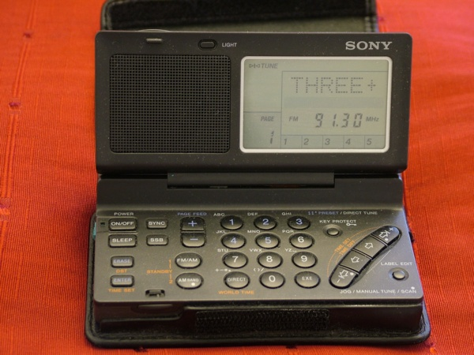
The Sony ICF-SW100 in happier times
This radio is a very capable receiver covering the SW, LW, MW and broadcast FM bands. It includes
SSB and synchronous detection. All this -- and a clock! -- in a very small package
(11cm x 7cm x 1.5cm). I bought mine on E-Bay in early 2014 for about 100 GBP and it worked
very well indeed. Until ...
One day I pressed the ON button and nothing happened. A minute or so later, pressing ON
again did turn the beast on ... but none of the other keys did anything. It turned itself
off after a few seconds and the ON button did nothing the next time I pressed it.
Looking around on the Internet, it turns out that these are the symptoms of a very common
(read: inevitable) failure that happens with examples of these built before 1997. There are
two ribbon cables that connect the base of the unit to the lid. These
are trapped when the lid is closed and eventually they break. Spectacularly, in fact.
In mine, they had both been almost entirely cut in two.
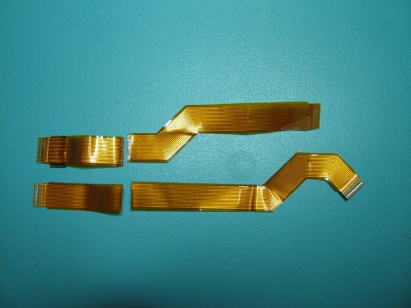
The problem ... two broken cables.
Sony fixed this in later units and issued a kit to convert the older examples which
contained a pair of new ribbon cables and a modified lid (presumably with a bigger
hole for the ribbon cables to pass through). This kit had a part number:
X-3372-340-1
Unfortunately, this kit is no longer available. A company called Donberg appeared to have
them in stock, but, on enquiring they didn't and couldn't help (but they were very helpful!).
After much searching, I gave up on trying to locate this kit. The chances of finding one,
while perhaps not zero, seem very low to me.
So that was that. The radio was dead. This seemed more than a slight pity, and, since there
was nothing really to lose, I started considering other possibilities. I briefly considered
buying another ... but nice ones seem to fetch on the far side of 200 GBP on E-Bay at the moment.
And I felt I should try harder to fix the one I already had.
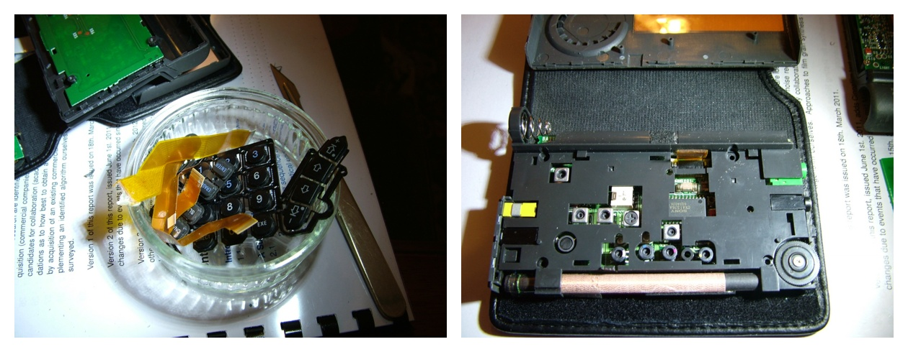
The Sony ICF-SW100 in pieces
Dismantling the beast (just remove the 4 screws at the bottom and prise the various
pieces apart works) allowed me to get to the ribbon cables. My first thought was
that maybe I could scrape the insulation off the ribbon cables near the breaks and
bridge the gaps with solder. NO ... I couldn't get that to work. It was a fairly desperate
thing to try. One factor (not the only one) that stopped this from working was the
pitch of the cable: conductors are spaced at a 0.5mm pitch. This is smaller than I am
comfortable with, and conventional soldering with an iron seems to me to be virtually
impossible at these scales. Solder doesn't like bridging gaps at the best of times
(except when you don't want it to, of course) and this "fix" would be in an area of
high mechanical stress (very high, it turns out), so the chances of it lasting would
be zero. Trying to solder thin strands of wire across the gaps was just impossible
(maybe someone could do this, but not me -- certainly not with the tools I have).
And that solution would break easily too.
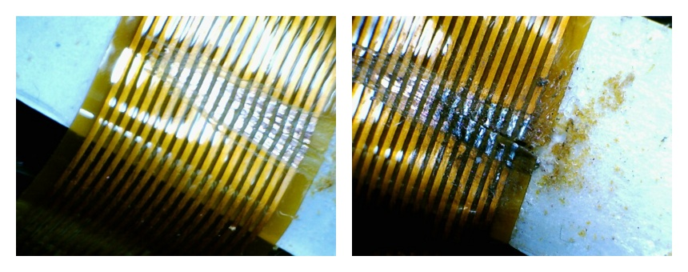
Bridging the gap ... just won't work ...
So, PLAN B: Maybe it was possible to find ribbon cables for other things that would suffice.
It turns out that there are 0.5mm pitch ribbon cables used in some laptops. One of the
Sony ribbon cables was 18 way and the other 16 way. They had interesting shapes which
obviously wouldn't be replicated in anything intended for other equipment.
The nearest thing I could find on E-Bay was a 24 way 0.5mm pitch ribbon cable described
as "FFC AWM ribbon flex cable". I don't know what FFC (maybe "flexible flat cable")
or AWM mean, but it looked close
to something that might do. The ends that plug in to the board connectors could be trimmed
to size (hopefully) to get the right number of ways. The problem that remained was they were
30 cm long ... much too long.
Well, beggars can't be choosers, so I bought two at 4.99GBP each.
The next step was to remove the old broken ribbon cables. I kept these for reference
while I ...
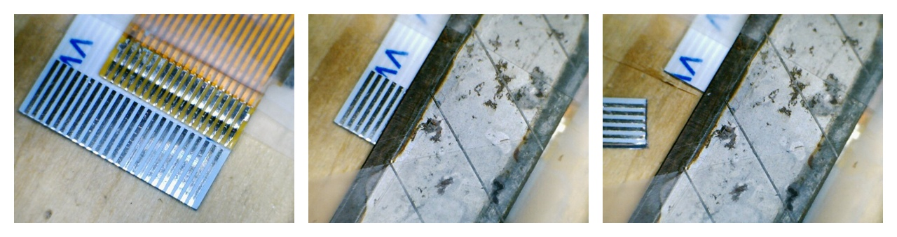
Cutting the new ribbon cables down to size
... carefully trimmed the connector ends of the new ribbon cables down from 24 way
to 18 and 16 way. It would have been all too easy to trim from one side on one
end and the other side at the other end, with a resulting useless cable! Lining up
the old broken cable connectors with the new cable connectors as a guide was
very useful. It also made me think this might actually work!
Before anything else, I enlarged the hole that the ribbon cables had to pass through
between the base and the lid. As it was, this was incredibly tight when the lid was
shut! No wonder the cables broke! I erred on the side of caution here, and kept enlarging the
hole (with a scalpel) until the new cables could be moved fairly freely even when the
lid was shut.
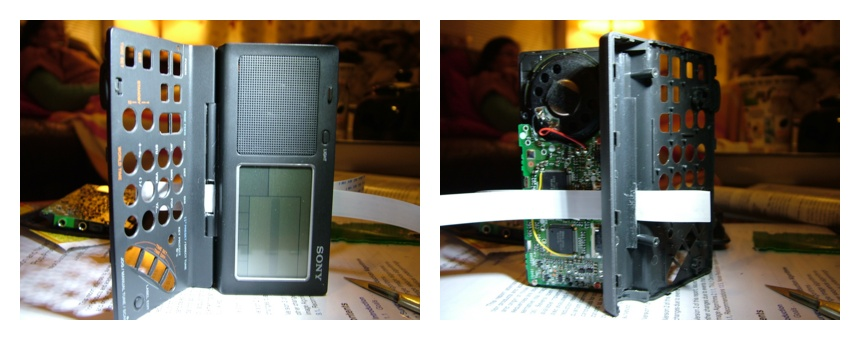
Enlarging the hole for the new ribbon cables
Then we came to inserting the new cables. The ends I thought would be difficult --
the key pad end for the 16 way cable and the "main board" end for the 18 way cable
went in rather easily. So far so good.
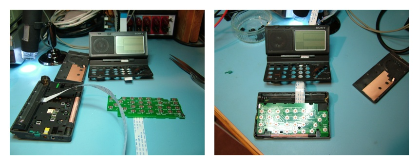
New ribbon cables plugged in to the main board and keypad board
Unfortunately, the lid ends did NOT! It seemed like we were almost there with things
having gone well ... but no. With a lot of struggling, the 16 way cable
did eventually go in to its socket, but the 18 way would not cooperate. I was thinking
maybe this just would not work ... even with more force than I was comfortable with
the damned thing would NOT go in. I couldn't see why not ... everything looked
as if it should fit. I expected something terminal (ha! ha!) to happen to the cable at any
moment...
On the point of giving up, I prized off the white part of the connector, pushed
the cable in as far as I could,
and clipped the white part back on. It sort of held. Fiddling about
a bit more and it started to seem as if it was sort of really in there. Maybe.
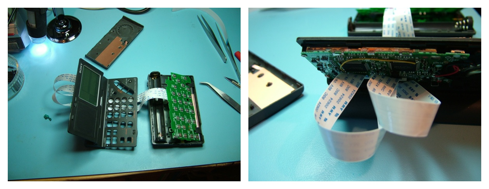
New ribbon cables FINALLY plugged in to the lid board
So, would it work?
Before putting everything back together properly, I put the batteries in and pressed
the ON button. It WORKED! At least -- it turned on. Whether all of the buttons
(and everything else) would work was still not clear. Anyway, I felt nothing more
could really be done, so I might as well fully reassemble it (apart from the lid
cover) and see what was what.
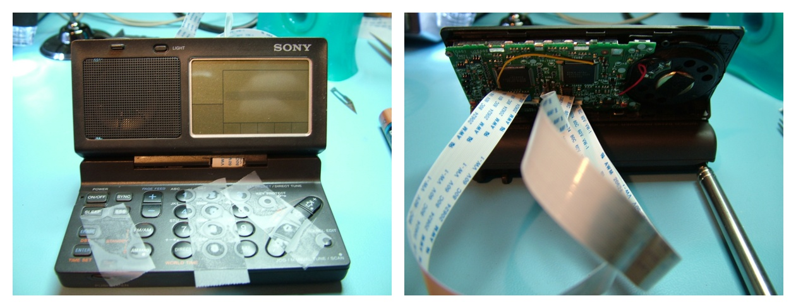
Reassembling the beast
Having done so, I was amazed to find that everything I tried worked! I think
this is largely down to DUMB LUCK, actually.
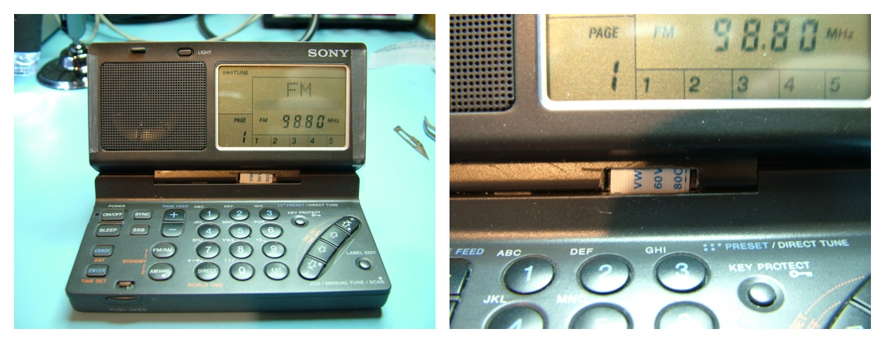
All working again ... at least for now. Not cosmetically perfect in the hinge area,
but at least the cables will no longer be trapped every time the lid is closed.
The remaining problem was the excessive length of the cables. It seemed like putting the
lid cover on was not likely to be possible. But, again thinking there wasn't much to lose
(although now I had a working radio, there was a lot more than before), I tried folding up
the cables to the point where the lid might fit. This turned out to be more feasible than
I thought. The lid would go on, but the clips would not hold. At this point I resorted
to Scotch Magic Tape to hold it on ... Not ideal, perhaps, but it sort of works.
Making a slightly deeper lid cover might be a good application for 3D printing. It is
a plastic part that isn't under much stress, so it sounds feasible. Maybe something to
try one day.
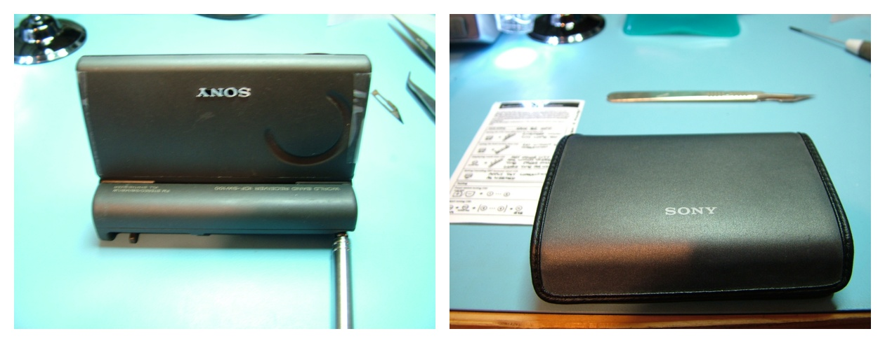
With the lid cover on ... albeit with the aid of Magic Tape
Probably more by luck than judgement, I once again have a working ICF-SW100! I don't know
how long it will last. Perhaps not long (if the 18 way cable pops out, for example).
But it might work for ages ... who knows? At any rate, it is better than the thing being
totally dead because of two fancy wires ...
I wouldn't attempt any of the above unless there really is nothing left to lose. If your
ICF-SW100 dies of this disease (and pre-1997 ones almost certainly will do so eventually),
it would be best to find the Sony repair kit if at all possible.
These seem to be like hen's teeth though, so I suspect it isn't possible.
If you have convinced yourself there is no alternative, this method can be made to
work ... at least, it did once! A lot of good luck may well be involved though, and it isn't for
the faint hearted.
Go home ...